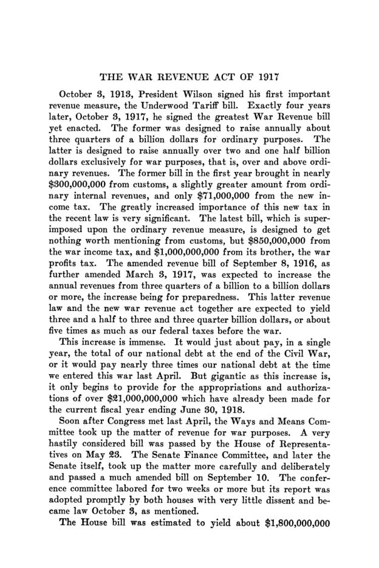

Blakey e a lei da receita de guerra de 1917
Leitura: 9 min
A lei de 3 de outubro de 1917 multiplicou por cinco os impostos federais americanos e fez da renda e do lucro de guerra suas bases. Roy G. Blakey a descreve título por título e argumenta que ainda era pouco.


Em 3 de outubro de 1913, o presidente Wilson assinou a tarifa Underwood, que no primeiro ano rendeu perto de US$ 300 milhões em direitos aduaneiros, um pouco mais em impostos internos ordinários e só US$ 71 milhões do novo imposto de renda. Exatamente quatro anos depois, assinou a lei de receita de guerra. Ela não pedia quase nada às alfândegas: esperava US$ 850 milhões do imposto de renda de guerra e US$ 1 bilhão do imposto sobre lucros de guerra.
Roy G. Blakey, da University of Minnesota, descreve a lei no número de dezembro de 1917 da American Economic Review. Somada à lei de 1916, emendada em março de 1917, a receita prevista era de 3,5 a 3,75 bilhões de dólares, cerca de cinco vezes os impostos federais de antes da guerra. O aumento bastaria, num só ano, para pagar a dívida nacional do fim da Guerra Civil. E mal começava a cobrir dotações e autorizações de mais de US$ 21 bilhões para o ano fiscal até 30 de junho de 1918.
Como a lei foi feita?
A Câmara aprovou às pressas um projeto em 23 de maio. O Senado o examinou com mais cuidado e aprovou uma versão muito emendada em 10 de setembro. A comissão de conciliação trabalhou duas semanas ou mais, e seu relatório foi aceito com pouca oposição. Durante a tramitação, as estimativas de gastos do Secretário do Tesouro, McAdoo, cresceram depressa, e o Senado, que parecia disposto a reduzir o total, acabou por aumentá-lo.
A disputa de fundo, diz Blakey, não foi entre as duas casas, mas dentro de cada uma: que parcela do gasto de guerra cobrir com impostos e, em consequência, quanto cobrar das rendas e fortunas grandes. A lei tem treze títulos e trata a lei de 8 de setembro de 1916 como lei básica, sobrepondo-lhe impostos de guerra, o que torna difícil, até para o iniciado, saber o total devido em cada caso.
Como ficou o imposto de renda?
O imposto de guerra cria um imposto normal de 2% para indivíduos e de 4% para empresas, somado aos 2% da lei de 1916. As isenções caem de US$ 3 mil para US$ 1 mil no caso de solteiros e de US$ 4 mil para US$ 2 mil no de chefes de família, mas só para o imposto de guerra. O adicional de guerra, só para indivíduos, começa em 1% acima de US$ 5 mil e chega a 50% acima de US$ 1 milhão; o adicional de 1916 começava acima de US$ 20 mil.
Para ilustrar a dúvida, Blakey cita uma carta do professor T. S. Adams: se lhe dissessem em agosto de 1914 que a Inglaterra cobraria imposto normal de 25% e adicionais até 42%, teria rejeitado a ideia como revolucionária.
“Os legisladores comuns da Inglaterra foram mais sábios do que estudiosos como eu.” (“the common legislators of England were wiser than students like myself”)
Outra mudança é a troca da retenção na fonte pela informação na fonte, salvo para juros de títulos com cupom e rendas de estrangeiros não residentes. Segundo o senador Simmons, presidente da Comissão de Finanças, dos US$ 360 milhões de imposto de renda arrecadados no ano anterior, menos de US$ 9 milhões vieram da fonte. O Secretário do Tesouro informou que cerca de 80% dos pedidos de restituição nasciam de retenções excessivas ou erradas. A lei permite ainda deduzir doações a fins de caridade, religião, educação e ciência até 15% da renda tributável.
Como tributar o lucro de guerra?
A Câmara propôs deduzir 8% do capital investido, como renda normal, e tributar o excedente a 8%. O Senado considerou impraticável apurar o capital investido, por causa de ações aguadas, franquias e fundo de comércio, e preferiu deduzir o lucro médio de antes da guerra, de 1911 a 1913, com alíquotas graduadas de 12% a 60%. Observou ainda que as ferrovias, com retorno médio inferior a 5% do capital, ficariam quase isentas pela proposta da Câmara, cujo imposto renderia menos de um quinto do previsto pelo Senado.
A lei final é um compromisso. Deduz a taxa média de lucro de 1911 a 1913, desde que fique entre 7% e 9% do capital investido, mais US$ 3 mil para empresas e US$ 6 mil para sociedades de pessoas e indivíduos. Sobre o excedente, as alíquotas são de 20% até 15% do capital, 25%, 35% e 45% nas faixas seguintes e 60% acima de 33%. Negócios sem capital, ou com capital nominal, pagam 8% sobre a renda líquida acima das deduções. Nos casos em que o capital não puder ser apurado, o Tesouro usará corporações representativas do mesmo ramo, o que dá ao Comissário e ao Secretário grande poder discricionário.
O que mais foi tributado?
O imposto sobre o uísque passou de US$ 1,10 para US$ 3,20 por galão de um dia para o outro; segundo um jornal local citado por Blakey, a caixa vendida a US$ 3 passou a custar US$ 8. O imposto de US$ 1,50 sobre a cerveja foi dobrado. Charutos, cigarros e fumo receberam taxas graduadas; passagens, assentos em vagões especiais, telegramas, seguros, automóveis, joias, filmes, ingressos e clubes também. O selo de documentos voltou para títulos, ações, escrituras e baralhos. O imposto federal sobre heranças ganhou um adicional de guerra, com alíquota total de 2% a 25%.
Caíram, entre outras, a cobrança retroativa sobre as rendas de 1916, o aumento de 10% em todos os direitos aduaneiros, com direito de 10% sobre a lista livre, e os impostos de consumo sobre luz, gás e telefone residencial, que Blakey considera boas supressões. A carta passou a 3 centavos. A segunda classe postal, de jornais e revistas, provocou uma das maiores disputas: a lei adotou zonas para a parte publicitária, com tarifas que sobem a cada ano a partir de julho de 1918, e taxas fixas para o resto.
A lei tributou o bastante?
Para Blakey, não. O texto aprovado talvez fosse o que se podia esperar, dados os precedentes e a falta de informação sobre finanças de guerra, mas a parcela do gasto coberta por impostos era menor do que seria prudente. Os 21 bilhões de dólares autorizados, observa, equivaliam aproximadamente ao gasto total da Grã-Bretanha em três anos de guerra.
Ele cita E. Dana Durand, para quem a renda nacional estaria então perto de 40 bilhões de dólares, talvez 45. Para financiar o que já fora autorizado, mesmo destinando à guerra tudo o que se investia em capital novo, seria preciso cortar o consumo médio para dois terços ou metade do que era. Tomar emprestado não muda isso: o que se toma vem da renda nacional e só decide quem corta o consumo.
“O que o governo precisa ter, em última análise, não é dinheiro, mas homens e mercadorias.” (“What the government must have ultimately is not money, but men and commodities.”)
O comprador de títulos, argumenta, tende a cortar menos o consumo que o contribuinte, porque não se sente mais pobre e pode tomar emprestado dando o título em garantia. A diferença pressiona os bancos e vira inflação de depósitos, tão eficaz quanto o papel-moeda e mais sutil. Blakey cita A. C. Miller, do Federal Reserve Board, sobre a capacidade potencial de crédito do sistema, de uns US$ 7,5 bilhões, e defende impostos mais altos e a proibição da fabricação de carros de passeio e de outros luxos.
Na minha leitura
Na minha leitura, o artigo vale em duas camadas. A primeira é o registro minucioso de uma reforma que mudou a base do sistema fiscal americano, das alfândegas e impostos de consumo para a renda e o lucro, com as soluções administrativas improvisadas para medir capital e lucro normal.
A segunda é o argumento econômico, ainda atual: o custo real de uma guerra é pago em consumo renunciado no presente, qualquer que seja a forma de financiamento, e a escolha entre imposto e dívida decide quem renuncia e se a diferença será coberta por inflação. Blakey defende essa tese com a mesma clareza com que descreve as alíquotas.
Glossário
- Imposto normal e adicional
- na lei americana, alíquota básica sobre toda a renda tributável e sobretaxa progressiva por faixas.
- Lucros extraordinários (excess profits)
- lucro acima de um retorno considerado normal sobre o capital investido.
- Capital investido
- dinheiro e bens efetivamente aportados, mais lucros retidos, base para o lucro normal.
- Retenção na fonte
- desconto do imposto por quem paga o rendimento, antes de entregá-lo ao beneficiário.
- Informação na fonte
- obrigação de quem paga rendimentos de informar o fisco, sem reter o imposto.
- Comissão de conciliação
- comissão de deputados e senadores que harmoniza as versões das duas casas de um projeto.
- Inflação de depósitos
- aumento dos meios de pagamento por expansão do crédito bancário, sem emissão de papel-moeda.
Fontes
- The War Revenue Act of 1917 — Roy G. Blakey (University of Minnesota) (pp. 791–815). JSTOR · Internet Archive (PDF)
- Edição completa, com os demais artigos: Nº 149 do Arquivo.
Documento em domínio público (EUA, publicado antes de 1931), via JSTOR Early Journal Content e Internet Archive. Resumo e comentário do autor deste site, sem afiliação com a American Economic Association. Encontrou um erro? Escreva: a correção é publicada no próprio texto, com data.
← Clark e a base do coletivismo de guerra ↑ Nº 149 · A receita de guerra, o coletivismo de Clark e a escala de Dewing